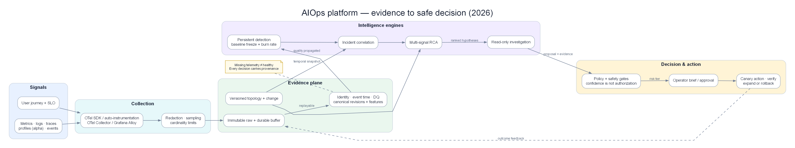
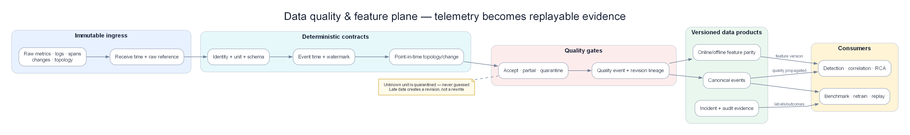

Chapter 06 — Data quality và feature plane cho AIOps¶
Data Plane không phải nơi “đổ telemetry vào lake”. Nó là bộ máy biến record không đồng nhất thành evidence có identity, event time, topology/change snapshot, quality và feature version; đồng thời phải replay ra cùng kết quả sau restart. Chương này harden từng bước bằng incident payment, late data, schema drift và fault auth nổ chồng.
Toàn cảnh pipeline AIOps

Vị trí của data plane trong luồng evidence → decision → action.
Data quality và feature plane

Immutable ingress → normalize → temporal enrich → quality gate → versioned data products.
Prerequisites¶
- 00 — Giới thiệu AIOps — pipeline, maturity, data flywheel
- 01 — Observability — ba trụ metrics / logs / traces, SLI/SLO
- 02 — OpenTelemetry — thu thập, processor, resource attributes
- 03 — Prometheus — metric model, cardinality, retention TSDB
- 04 — Loki — log pipeline, label design, object storage
- 05 — Tempo — trace storage, exemplar correlation
Related Documents¶
- 08 — Topology & Change — service graph + change/deploy bus
- 07 — Kafka / Kinesis — buffer & fan-out sau data plane
- 09 — Anomaly Detection — consumer feature / train-serve
- 10 — Alert Correlation — cần topology & canonical incident events
- 11 — Root Cause Analysis — phụ thuộc enrichment + change context
- 12 — LLM Agent — context pack từ store / KB / embedding
- 13 — Remediation — audit store, verify metrics
- 14 — Production — SLO của chính pipeline
- 16 — Domain Packs — retention, PII và money-path semantics
- 17 — Benchmark Replay — control/data-plane failure scenarios
Next Reading¶
Sau chương này, hãy chuyển sang 07 — Apache Kafka / AWS Kinesis để đi sâu transport, topic design, DLQ và replay.
Cách đọc chương này¶
Hãy theo sáu record thật từ lúc đi vào pipeline cho tới khi trở thành evidence mà detector, correlation và RCA có thể dùng lại. Mỗi quyết định đều phải trả lời được: record thuộc service nào, xảy ra lúc nào, schema/unit có đáng tin không, enrichment nào có hiệu lực tại event time, feature được tính bằng version nào và replay sau ba tháng có ra cùng kết quả không. Những phần sau mở rộng chính engine đó qua storage, late data, PII, cost và degraded mode; không còn ranh giới giữa “phần thực hành” và “phần lý thuyết”.
Production hardening — sáu record đi qua Data Plane¶
Input thật không bao giờ sạch như schema mẫu¶
Tại onset của incident payment, Data Plane nhận sáu record sau từ các nguồn và thời điểm khác nhau:
| ID | Event time | Arrived | Raw input | Vấn đề |
|---|---|---|---|---|
| M1 | 10:10:30 | 10:10:45 | payment_pool_wait=2000, service=payment, không có unit |
Có thể là ms hoặc s; service alias |
| L1 | 10:10:42 | 10:10:44 | Log pool timeout, app=payment-api, order ID raw |
PII/business ID policy, failure family chưa chuẩn |
| T1 | 10:10:39 | 10:10:46 | Span db.pool.acquire, deployment digest đầy đủ |
Identity tốt, nhưng topology edge chưa có trong cache |
| C1 | 10:07:00 | 10:12:10 | Deploy catalog-v42, app=catalog-svc |
Change event tới muộn, không cùng service payment |
| G1 | 10:09:55 | 10:09:56 | Edge payment-api → payment-db, valid 10:00–10:20 |
Graph snapshot có interval hiệu lực |
| Q1 | 10:10:42 | 10:11:05 | Collector quality: trace coverage 88%, lag P99 7 s | Dùng để hiệu chỉnh confidence |
Nếu join theo processing time, C1 xuất hiện sau error và có thể bị xem là “deploy sau lỗi”. Nếu join fuzzy theo chữ payment, M1/L1/T1 có thể thành ba service. Nếu tự đoán unit của M1, một giá trị 2.000 giây sẽ tạo anomaly giả khổng lồ. Data Plane phải làm các quyết định này minh bạch và có revision.
Row-by-row transformation¶
| Record | Normalize | Enrich | Validate | Canonical output |
|---|---|---|---|---|
| M1 | Alias payment → payment-api; unit tra từ metric contract v3 |
Thêm env/region/deployment từ scrape target | Contract không công bố unit → quarantine value, vẫn phát quality event | value=null, quality.unit_unknown, không fill 0 |
| L1 | Parse template → db.pool.acquire_timeout; tokenize order ID |
Join owner, criticality, trace/deploy | Parser v5 hợp lệ, PII scan pass | Failure event dùng được cho correlation/RCA |
| T1 | Chuẩn operation/dependency/status | Join G1 theo event time | Edge fresh, trace sampled, duration hợp lệ | Causal evidence confidence theo coverage Q1 |
| C1 | Alias catalog, normalize change type/version | Join topology snapshot tại 10:07 | Late nhưng trong correction horizon | Change context của catalog, không gán payment |
| G1 | Chuẩn node/edge identity | Thêm source trust và criticality | Graph age 30 s, conflict none | Versioned topology snapshot |
| Q1 | Chuẩn signal/reason/scope | Map consumer bị ảnh hưởng | Fresh trong window | Quality feature cho mọi evidence cùng scope |
Điểm quan trọng: quarantine M1 không có nghĩa vứt cả batch hay cả service. Data Plane giữ record envelope, lý do, source và raw reference; downstream nhận unknown thay vì số đoán. Một bad field không được kéo sập log/span evidence còn tốt.
Canonical event phải tách fact khỏi interpretation¶
Fact gồm raw event reference, source, event/observed time, identity đã resolve, semantic outcome, schema/parser version và quality. Interpretation như anomaly score, incident membership hay RCA rank thuộc intelligence plane và có version/lifecycle riêng.
Nếu canonical event đã ghi root_cause=payment-db, replay sau này không thể kiểm thử model mới độc lập. Data Plane chỉ ghi failure_family=db.pool.acquire_timeout, edge/time/change evidence; Chapter 11 quyết định rank.
Một canonical envelope tối thiểu phải trả lời:
- Đây là event nào và duplicate của event nào?
- Xảy ra khi nào, tới khi nào, uncertainty bao nhiêu?
- Thuộc service/deployment/region/tenant scope nào?
- Schema, transform, topology và change snapshot version nào đã dùng?
- Trường nào observed, derived, unknown hoặc redacted?
- Consumer nào được phép đọc raw reference?
Identity resolution không được fuzzy-match im lặng¶
Alias payment, payment-api, pay-svc có thể map tới canonical svc-0042, nhưng mapping phải có nguồn, valid-from/valid-to và version. Khi alias mới xuất hiện:
- nếu có mapping authoritative, resolve;
- nếu chỉ có tên gần giống, đưa vào unresolved identity queue;
- nếu service đã merge/split, dùng snapshot tại event time;
- nếu mapping sửa sau incident, replay tạo revision có audit.
Fuzzy match im lặng nguy hiểm hơn missing: nó có thể merge fault của payment-tokenizer vào payment-api, làm correlation/RCA tự tin sai.
Event time, watermark và correction horizon bằng số¶
Window 10:10–10:15 đóng theo event time. Sources có độ trễ:
| Source | P99 lag | Allowed lateness | Correction horizon |
|---|---|---|---|
| Metrics | 20 s | 60 s | 15 phút |
| Application logs | 45 s | 2 phút | 30 phút |
| Traces | 90 s | 3 phút | 30 phút |
| Deploy/change | 3 phút | 5 phút | 2 giờ |
| Topology sync | freshness SLO 2 phút | snapshot lookup | 24 giờ/audit |
C1 tới 10:12:10 cho event 10:07, tức late 5 phút 10 giây. Nó có thể vượt realtime lateness nhưng vẫn trong correction horizon. Engine không page lại; Data Plane phát revision tăng version của context window. Consumer contract phải idempotent và hiểu revision.
Watermark toàn cục theo source chậm nhất có thể làm mọi feature trễ. Dùng watermark theo topic/source/scope và join policy. Một tenant telemetry hỏng không nên giữ toàn region vô hạn.
Enrichment snapshot: không join với “hiện tại”¶
Incident lúc 10:10 phải dùng topology/deployment/ownership có hiệu lực lúc 10:10. Nếu payment rollback lúc 10:50 và graph hiện tại bỏ edge cũ, replay bằng current graph sẽ đổi RCA lịch sử.
Mỗi enriched event cần snapshot/version reference hoặc materialized critical fields. Trade-off:
- Write-time snapshot tăng storage nhưng replay ổn định.
- Read-time join linh hoạt nhưng dễ historical drift.
- Hybrid giữ identity/criticality/deployment/edge version tại write, truy vấn metadata display hiện tại ở read.
Owner hiện tại có thể nhận ticket, nhưng RCA/audit phải biết owner và topology tại incident time.
Data-quality gates theo mức độ, không chỉ pass/fail¶
| Vi phạm | Hành động | Downstream behavior |
|---|---|---|
| Thiếu optional owner/display name | Admit với quality.partial |
Detection chạy; routing fallback |
| Thiếu unit của critical metric | Quarantine value | Không tính feature; dùng log/trace fallback |
| Unknown service identity | Quarantine join-dependent fields | Không topology-correlate; giữ raw event |
| Schema incompatible | DLQ/quarantine theo reason | Không retry vô hạn cùng poison record |
| Topology stale | Admit telemetry, gắn graph quality | Correlation/RCA giảm topology weight |
| PII policy fail | Chặn sink không được phép, security audit | Không để raw payload tới LLM/vector store |
| Duplicate exporter event | Dedup transport identity | Giữ delivery quality, không tăng business count |
Một batch 10.000 records có một poison record không được rollback 9.999 records tốt rồi retry vô hạn. Quarantine phải bounded, searchable, replayable và có owner/SLO; DLQ không phải nghĩa địa.
Feature contract chống training-serving skew¶
Feature service_error_ratio_5m cần version và semantic đầy đủ:
| Thuộc tính | Ví dụ |
|---|---|
| Version | v4 |
| Numerator | system failures; loại business declines |
| Denominator | eligible customer requests |
| Window | event-time tumbling 5m, lateness 60s |
| Scope | service, region, route class |
| Missing | unknown; không fill zero |
| Quality | coverage, freshness, excluded count |
| Sources | metric contract v3 + outcome taxonomy v2 |
Nếu offline training tính theo processing time nhưng online serving tính event time, cùng incident sinh feature khác. Golden dataset phải chạy cùng transform logic hoặc so sánh online/offline parity trên cùng input.
Khi v4 thay v3, dual-write đủ lâu để đo distribution shift và detector replay. Không overwrite tên feature cũ rồi kỳ vọng model tự thích nghi.
Replay determinism và revision determinism¶
Cùng raw log và cùng version snapshots phải tạo cùng canonical/feature output sau:
- processor restart;
- partition rebalance;
- at-least-once redelivery;
- backfill từ object store;
- chạy lại một tháng sau.
Determinism không yêu cầu processing order giống hệt; yêu cầu output logical giống trong allowed correction policy. Stable event ID, idempotent sink, versioned lookup và event-time window là nền tảng.
Nếu topology source được sửa hồi tố, replay phải chọn rõ as-recorded hoặc with-correction, tạo dataset/version khác. Không âm thầm thay lịch sử.
Per-service isolation khi fault chồng¶
Payment incident đang mở thì auth fault xuất hiện 10:37. Feature state phải key ít nhất theo canonical service/scope/failure family phù hợp. Một global window state “incident_active=true” không được:
- freeze baseline của mọi service;
- suppress anomaly auth;
- trộn auth logs vào payment aggregate;
- dùng payment topology snapshot cho auth.
Shared gateway symptom có thể xuất hiện trong hai context packs, nhưng origin features/state vẫn tách. Cross-service aggregate là derived view, không thay state per-service.
Degraded mode khi Data Plane tự lỗi¶
| Failure | Data Plane làm gì | Intelligence được phép làm gì |
|---|---|---|
| Topology API timeout | Dùng snapshot còn hạn hoặc unknown | Detect tiếp; giảm merge/RCA graph weight |
| Feature store unavailable | Buffer canonical events, serve last-known kèm age | Không auto-remediate trên stale feature |
| Stream processor lag 12 phút | Công bố oldest event age và affected scopes | Page trực tiếp từ bypass SLO alerts; AIOps degraded |
| Schema registry unavailable | Dùng cached compatible schema trong TTL | Sau TTL quarantine, không deserialize đoán |
| Quarantine store full | Shed noncritical debug trước | Critical event loss mở platform incident |
| PII service unavailable | Fail closed cho restricted sinks | Không gửi raw sang LLM để “cứu điều tra” |
Data Plane SLO có thể kiểm chứng¶
| SLO | Mục tiêu khởi đầu |
|---|---|
| Canonical event freshness P99 | < 60 s critical metrics; < 180 s logs/traces |
| Valid critical records | > 99,9% |
| Identity resolution | > 99,5% critical services |
| Online/offline feature parity | > 99,99% trong tolerance |
| Replay logical equality | 100% golden events |
| Quarantine age P95 | < 24 giờ; critical < 1 giờ |
| Topology snapshot within freshness | > 99% incident windows |
| Unreported data loss | 0 |
Uptime của Flink/consumer không thay thế các SLO này. Job xanh nhưng output stale/sai schema vẫn là Data Plane outage.
Failure injection acceptance cho Chapter 06¶
Golden replay inject tám lỗi:
- Metric thiếu unit.
- Service alias mới chưa map.
- Deploy event late 5 phút.
- Topology stale 20 phút.
- Collector resend 10% records.
- Processor restart giữa window.
- Schema v2/v3 chạy song song.
- Auth fault nổ chồng payment fault.
Điều kiện đạt:
- Không record nào bị đoán unit/identity im lặng.
- Late change tạo revision, không page duplicate.
- Duplicate/restart không nhân count/incident.
- Stale topology hạ confidence nhưng không làm detector câm.
- v2/v3 outputs có version và dual-run comparison.
- Auth có state/features riêng, không bị payment freeze/suppress.
- Replay online/offline tạo cùng feature trong tolerance.
- Mọi injected loss/partial đều xuất hiện trong quality output.
Output contract sang Chapter 07 và Intelligence Plane¶
Chapter 06 xuất canonical events/features versioned, idempotent, event-time aware, có topology/change snapshot và quality. Chapter 07 phải vận chuyển/replay chúng mà không phá ordering per key hoặc nhân logical event. Chapter 09–10 phải đọc quality/revision thay vì giả định value luôn đầy đủ.
1. Vì sao chương này nằm sau collection¶
Ý TƯỞNG
Collection (Ch.02–05) trả lời: làm sao đưa telemetry ra khỏi process? Data plane trả lời: làm sao để telemetry đó trở thành input có contract cho máy và cho con người? Nếu đảo thứ tự — xây detector trước khi có contract tên service, đơn vị metric, schema log — bạn sẽ train mô hình trên rác và tin vào false confidence.
1.1 Collection kết thúc ở đâu?¶
Sau OpenTelemetry, Prometheus, Loki, Tempo, bạn đã có:
| Thành phần | Bạn “có” được gì | Bạn chưa có gì |
|---|---|---|
| OTel Collector | Pipeline export đa tín hiệu | Contract chuẩn org-wide cho naming |
| Prometheus | Time series scrape/remote-write | Feature window ổn định cho ML |
| Loki | Log index + object store chunks | Event semantic (severity vs auth vs deploy) |
| Tempo | Trace by ID + SpanMetrics | Topology tin cậy + change context |
Collection tối ưu cho khả năng quan sát vận hành (dashboard, page, drill-down). AIOps cần thêm khả năng tái lập (reproducibility) và khả năng liên kết (joinability) giữa các tín hiệu theo thời gian, identity, và topology.
1.2 Khoảng trống kinh điển sau collection¶
Warning
Nhảy cóc nguy hiểm: nhiều team sau khi có Grafana “đẹp” liền cắm anomaly detector trực tiếp vào PromQL thô. Ba tháng sau: service rename làm baseline gãy, unit ms vs s làm score vô nghĩa, deploy không gắn version khiến RCA luôn đoán sai. Data plane tồn tại để chặn các failure mode im lặng này trước intelligence layer.
1.3 Mental model pipeline cập nhật¶
Handbook dùng pipeline mở rộng sau chương này:
| Stage | Câu hỏi THEN (khi nào) | Owner điển hình |
|---|---|---|
| Collect | Khi process emit signal | App + Platform |
| Normalize | Khi identity/unit/schema lệch giữa team | Platform / Observability |
| Enrich | Khi RCA/correlation cần ngữ cảnh ngoài signal | Platform + CMDB/Service catalog |
| Validate | Khi schema break giết ML im lặng | Data platform + AIOps |
| Buffer/Store | Khi fan-out, replay, tiering cost | Platform |
| Feature | Khi train/serve phải cùng định nghĩa | AIOps / ML platform |
| Detect… | Khi signal đã “joinable & trusted” | AIOps |
Vì sao không gộp Normalize vào OTel Collector processors?
Có thể — và nên — làm một phần normalize ở Collector (resource attributes, unit conversion nhẹ). Nhưng org-wide canonical model, topology join, và feature contract thường vượt quá scope Collector: chúng phụ thuộc catalog, deploy API, SLO store, ticket system. Data plane là hợp đồng tổ chức, không chỉ config YAML một collector.
1.4 Quan hệ với control plane¶
Đừng nhầm telemetry data plane (chương này) với Kubernetes control plane hay product data plane trong Benchmark Replay. Ở đây:
- Telemetry Data Plane: đường đi và biến đổi của metrics/logs/traces/events phục vụ AIOps.
- Intelligence Plane: detect → correlate → RCA → LLM → decide.
- Action / Control Plane (AIOps): remediation policy, break-glass, audit.
Ba plane phải fail độc lập. Data plane down ≠ product traffic down — nhưng intelligence sẽ mù. Xem thêm Production về fail-open alerting.
2. Bản đồ Data Plane vs Intelligence Plane¶
Ý TƯỞNG
Data plane tối ưu đúng, đủ, rẻ, có thể replay. Intelligence plane tối ưu tín hiệu actionable, precision-at-page, explainability. Trộn hai mục tiêu vào một service monolith là anti-pattern: bạn sẽ không scale được team ownership và không debug được “model sai hay data sai”.
2.1 Phân ranh giới trách nhiệm¶
| Chiều | Data Plane | Intelligence Plane |
|---|---|---|
| Input | Raw / semi-raw telemetry | Canonical events + features |
| Output | Trusted series, events, features | Anomalies, groups, RCA, recommendations |
| SLO chính | Freshness, completeness, schema validity | Precision-at-page, MTTD, explain rate |
| Failure mode | Silent drop, skew, stale topology | FP/FN, over-correlation, hallucination |
| Replay | Bắt buộc (train + audit) | Tùy (shadow, backtest) |
| Team skill | Distributed systems + data quality | Stats/ML + SRE domain |
2.2 Luồng dữ liệu đầy đủ (logical)¶
Một record đi qua sáu ranh giới có thể quan sát: nhận raw bất biến; giải identity/unit/time; enrich bằng snapshot có hiệu lực; quality gate quyết định accept/quarantine/partial; materialize canonical event/feature có version; fan-out tới consumer kèm provenance. Mỗi ranh giới phát count, lag, drop reason và version. Nếu chỉ đo “Kafka nhận bao nhiêu message”, đội không biết 8% telemetry đã biến mất ở parser hay join topology.
2.3 WHERE vs WHEN — hai trục thiết kế¶
- WHERE (ở đâu): Collector processor? Stream job? Feature store job? Query-time join?
- WHEN (khi nào cần): luôn luôn? chỉ multi-tenant? chỉ khi train ML? chỉ regulated?
Principal SRE chọn theo hậu quả khi sai, không theo “architecture đẹp”:
| Biến đổi | Prefer WHERE | Prefer WHEN |
|---|---|---|
Unit s→ms |
Sớm (Collector / scrape relabel) | Luôn — unit sai phá mọi model |
| Service name canonical | Sớm + catalog | Khi >1 team emit |
| Topology edge | Enrich service / cache | Khi correlation/RCA |
| Rolling z-score feature | Feature job | Khi detector online |
| Full-text log body archive | Cold object | Khi audit / rare RCA |
| Embedding cho KB | Offline batch | Khi LLM agent production |
Important
Quy tắc vàng: mọi thứ identity-critical (service, env, tenant, unit, timestamp semantics) xử lý sớm và deterministic. Mọi thứ model-specific (window 5m vs 15m, embedding model version) để Feature stage versioned. Đừng nhét hyperparameter model vào Collector.
3. Khung quyết định: raw telemetry đủ khi nào?¶
Ý TƯỞNG
Không phải org nào cũng cần full data plane ngày 1. Xây quá sớm = fixed cost chết người. Xây quá muộn = ML/RCA trên dữ liệu bẩn, mất niềm tin. Khung dưới đây giúp bạn chọn mức đầu tư đúng lúc.
3.1 Decision tree¶
Bắt đầu bằng hậu quả khi record sai. Nếu chỉ phục vụ dashboard thủ công và raw có một producer, giữ pipeline nhỏ. Nếu cùng tín hiệu đi vào page hoặc detector, bắt buộc identity, unit và time contract. Nếu phải join nhiều signal/service, thêm enrichment snapshot và quality propagation. Nếu train offline, replay hoặc audit, thêm canonical version, feature parity và cold history. Chỉ thêm feature store khi có ít nhất hai consumer cần cùng feature hoặc train/serve skew đã xuất hiện.
3.2 Ma trận “đủ chưa?”¶
| Nhu cầu vận hành | Raw telemetry | +Normalize | +Enrich | +Validate/DLQ | +Feature Store |
|---|---|---|---|---|---|
| Dashboard on-call | ✅ | ⚪ | ⚪ | ⚪ | ❌ |
| Static threshold page | ✅ | 🟡 unit/name | ⚪ | ⚪ | ❌ |
| SLO burn alerts | ✅ | 🟡 | 🟡 deploy/SLO id | ⚪ | ❌ |
| Statistical anomaly (EWMA) | 🟡 | ✅ | 🟡 | 🟡 | ⚪ |
| Multi-signal correlation | ❌ | ✅ | ✅ topology | ✅ | ⚪ |
| RCA ranking + change | ❌ | ✅ | ✅ change/owner | ✅ | 🟡 |
| Multi-model ensemble | ❌ | ✅ | ✅ | ✅ | ✅ |
| Regulated audit 1–7y | 🟡 cold | ✅ | ✅ | ✅ | 🟡 |
| LLM context pack | 🟡 | ✅ | ✅ | ✅ | 🟡 embeddings |
Chú thích: ✅ cần · 🟡 nên có · ⚪ tùy · ❌ lãng phí / chưa ROI
3.3 WHEN raw is enough (và hãy dừng lại)¶
Raw (hoặc gần-raw) đủ khi tất cả điều sau đúng:
- < ~30 services, 1–2 team, convention naming đã enforce bằng CI.
- Không multi-tenant isolation cứng.
- Chưa train offline model; detector = threshold + vài EWMA.
- Topology đơn giản (monolith hoặc 1 tier rõ).
- Không yêu cầu audit retention dài / legal hold.
- On-call tin dashboard hiện tại; MTTD chấp nhận được.
Tip
Tín hiệu chuyển level: khi lần đầu tiên bạn nghe câu “model báo anomaly nhưng service đó đã rename tuần trước” hoặc “hai detector tính latency khác nhau” — đó là lúc full normalize + feature contract không còn optional.
3.4 WHEN full data plane là bắt buộc¶
Xây full plane khi một trong các điều sau xuất hiện:
- Multi-region + multi-tenant với isolation/reporting riêng.
-
1 consumer intelligence (AD + correlation + training + audit) trên cùng stream.
- Train/serve skew đã gây incident hoặc gần-incident.
- Regulator yêu cầu lineage / retention có chứng minh.
- RCA tự động cần change ticket + owner + SLO objective_id.
- Cost object storage vs hot TSDB bắt đầu “đốt” budget observability > ~15–20% eng spend.
4. Normalize — chuẩn hóa tín hiệu¶
Ý TƯỞNG
Normalize không phải “làm data đẹp cho dashboard”. Normalize là biến đổi deterministic để hai điểm đo cùng hiện tượng vật lý/logic trở thành cùng identity + cùng semantics. Không có normalize, join metrics–logs–traces là ảo tưởng.
4.1 Normalize là gì?¶
Normalize trong AIOps data plane gồm tối thiểu:
| Nhóm | Ví dụ biến đổi | Hậu quả nếu bỏ |
|---|---|---|
| Identity | payment-svc, PaymentService, payments → payment |
Split series, baseline gãy |
| Unit | latency s vs ms; bytes vs MB |
Z-score / threshold vô nghĩa |
| Timestamp | event time vs process time; timezone | Watermark sai, late data ảo |
| Severity map | ERROR/Error/err/sev=3 → enum chuẩn |
Log AD noise |
| Resource attrs | k8s.pod.name vs pod |
Cardinality & join fail |
| Env/tenant | prod, production, prd → prod |
Cross-env false correlation |
| Trace context | W3C vs B3 residual | Broken exemplars |
| Metric type semantics | counter vs gauge misuse | rate() sai |
4.2 WHY — bốn lý do Principal quan tâm¶
- Joinability: correlation và RCA cần cùng
service,env,region,deploy_idkeys. - Model stability: feature distribution không nhảy vì rename/unit.
- Human trust: on-call so sánh “latency payment” không phải đoán series nào đúng.
- Cost: high-cardinality alias (
pod_nameraw +pod) nhân đôi chi phí.
4.3 WHEN phải normalize (signals)¶
A) Unit mismatch — khi có >1 instrumentation path¶
Ví dụ cùng pool wait thực tế 2 giây nhưng SDK A gửi 2, SDK B gửi 2000. Nếu ghép thành dãy 1,8; 2,1; 1,9; 2000; 2,2, detector chắc chắn báo anomaly dù production không đổi. Contract phải xác nhận unit từ metadata; record không chứng minh được unit bị quarantine, tuyệt đối không “đoán theo độ lớn”.
WHEN: ngay khi PromQL/dashboard bắt đầu * 1000 rải rác. Làm gì: canonical unit trong naming (_seconds, _bytes, _ratio) + Collector transform / recording rules rõ ràng. Không để detector nhân 1000 ad-hoc.
B) Service name drift — khi ownership hoặc deploy system đổi tên¶
WHEN: >3 alias cho một logical service, hoặc service catalog đã tồn tại nhưng telemetry không map. Làm gì: single canonical service từ catalog; raw name giữ ở service_raw để debug.
Warning
Đổi canonical name không được im lặng. Cần dual-write alias window (ví dụ 14–30 ngày), migration note cho dashboards/alerts/models, và feature version bump. Rename “sạch” một đêm = xóa lịch sử train.
C) Clock skew — khi multi-host / multi-cloud / bare metal lẫn container¶
- Span parent kết thúc trước child start.
- Log “error” xuất hiện trước metric spike 2 phút vì NTP lệch.
- Feature window 5 phút “nhìn thấy tương lai” trên host lệch giờ.
WHEN: trace tree có negative duration > ngưỡng; hoặc multi-region agent không NTP/chrony enforced. Làm gì: prefer server-side receive time cho ordering khi skew lớn; flag clock_skew_ms; đừng “sửa” timestamp span tùy tiện đến mức phá causality — quarantine trace lỗi nặng.
D) Severity maps — khi log AD hoặc paging từ log¶
Map về enum hạn chế: TRACE|DEBUG|INFO|WARN|ERROR|FATAL + severity_impact boolean riêng (business). App A dùng CRITICAL, app B dùng sev=1 — WHEN bạn aggregate error rate cross-service.
4.4 Pipeline normalize điển hình¶
Một policy normalize phải diễn đạt được các quyết định sau, bất kể đội triển khai bằng công nghệ nào:
4.5 WHEN NOT to normalize aggressively¶
Important
Over-normalize cũng là bug. Giữ raw khi:
- Forensics: body log gốc có thể cần cho security IR — normalize field tách, không ghi đè body nếu policy yêu cầu raw sealed.
- Vendor-specific diagnostics: attribute lạ của SDK giúp debug instrumentation; drop ở hot path labels, nhưng có thể giữ cold archive.
- Experimentation: team đang thử semantic convention mới — dùng namespace
x_/exp_thay vì map nhầm vào canonical. - Lossy unit conversion: int milliseconds → float seconds có thể mất precision ở histogram boundary; hiểu trade-off.
- Legal hold raw: một số ngành yêu cầu bit-perfect original; normalize tạo derived copy, không thay original sealed.
Quy tắc: normalize identity & unit mạnh; normalize payload business thận trọng; luôn giữ raw_ref hoặc dual path khi regulated.
4.6 Kiểm chứng normalize¶
| Kiểm chứng | Cách | Alert khi |
|---|---|---|
| Alias collision | Catalog vs telemetry join rate | < 98% services map được |
| Unit lint | CI metric name suffixes | PR vi phạm convention |
| Severity unknown rate | % log severity = UNKNOWN | > 1% sustained |
| Clock skew rate | % spans negative duration | > 0.1% |
| Pipeline version lag | hosts cũ còn normalize_vN-2 | > 5% fleet |
4.7 Stream processing — Flink, Kafka Streams, Spark, consumer¶
Ý TƯỞNG
Kafka là log / bus. Bản thân Kafka không normalize nặng, join topology, window feature, hay giữ state lâu dài. Cần một lớp đọc bus → biến đổi → ghi topic canonical / feature store. Lớp đó thường là stream processor. Kafka + Flink là cặp production rất phổ biến — nhưng đó là lựa chọn theo workload và maturity, không phải định luật bắt buộc.
Kafka “đi với” Flink — có đúng không?¶
Thường đúng ở quy mô mid/large — vì lý do kỹ thuật, không phải trend:
| Vì sao team ghép Kafka + Flink | AIOps được gì |
|---|---|
| Source/sink Kafka first-class (offset, EOS pattern, consumer group) | Ingest tin cậy telemetry / anomaly / change |
| Event-time + watermark + late data | Window đúng khi scrape/export trễ (§12) |
| State lớn theo key (RocksDB) + checkpoint/savepoint | Join topology, sliding feature, sessionization |
| Scale operator ngang | Series cardinality cao không nhét một pod Python khổng lồ |
| Savepoint → reprocess từ offset Kafka | Sửa bug enrich / recompute feature |
Thường chưa cần Flink khi job vẫn là:
- Đổi tên / drop / unit nhẹ → OTel Collector đủ
- Map stateless + group đơn giản → consumer service (Python/Go) đủ
- JVM, state vừa, muốn “Kafka-native” → Kafka Streams
- Join batch nhiều ngày / bảng train → Spark trên lake
Bảng so sánh (cùng stage: xử lý trên bus)¶
| Chiều | Consumer service | Kafka Streams | Apache Flink | Spark (batch / SS) |
|---|---|---|---|---|
| Ops | Thấp | Trung bình | Cao (JM/TM, checkpoint) | Cao |
| State & window | Tự xây / Redis | State store local | Rất mạnh (event-time) | Offline mạnh; streaming dễ lệch nếu lạm dụng |
| Latency | ms–giây | ms–vài giây | giây (typ. AIOps job) | phút (batch) |
| Khớp Kafka | Consumer native | Sâu nhất trong ecosystem Kafka | Connector + EOS tốt | Thường thiên lake |
| Chỗ AIOps hợp | AD scorer, enrich nhẹ, tool LLM | Identity map, join nhẹ, route | Feature window, topology join, multi-stream | Training table, backfill |
| Khi nào đau | State “giấu” Redis; không watermark | CEP / window nhiều giờ phức tạp | Overkill cho rename 3 field | Giả real-time AD bằng micro-batch |
Cây quyết định¶
Nếu phép biến đổi stateless, latency thấp và không cần replay độc lập, đặt ở collector hoặc consumer nhỏ. Nếu cần event-time window, join nhiều stream, state lớn và sửa logic rồi backfill, dùng stream processor có checkpoint. Nếu horizon nhiều ngày và output chủ yếu là training table, dùng batch/lake. Quyết định được nâng cấp khi state/replay pressure xuất hiện, không phải vì Kafka “thường đi cùng” một công cụ nào đó.
Lộ trình maturity gợi ý¶
| Mức | Lớp process |
|---|---|
| L0–L1 | Collector + vài consumer service |
| L2 | Collector + Kafka Streams hoặc 1 job Flink cho identity/enrich |
| L3+ | Kafka + Flink cho feature + enrich phức tạp; consumer cho model serve |
| Luôn | Kafka là contract log; processor thay được nhờ schema topic |
Warning
Anti-pattern: “Có Kafka nên phải có Flink.” Flink không owner, không SLO checkpoint lag, không schema contract = control plane thứ hai không đáng tin. Prefer một domain Flink được owned rõ hơn năm job nửa vời.
Tip
Hybrid production ổn: OTel (normalize edge) → Kafka → Flink (enrich + feature) → Kafka feature/canonical → Python consumers (AD / correlation). Spark chỉ trên S3/Parquet để retrain. Chi tiết transport: 07 — Kafka.
5. Enrich — làm giàu ngữ cảnh¶
Ý TƯỞNG
Telemetry thô mô tả triệu chứng. Enrichment gắn ngữ cảnh vận hành: ai sở hữu, version nào vừa deploy, SLO nào đang burn, ticket change nào mở, region nào, tenant nào. Không enrich, RCA chỉ xếp hạng metric spike — không xếp hạng nguyên nhân.
5.1 Enrich những gì?¶
| Field enrichment | Nguồn điển hình | Dùng cho |
|---|---|---|
service, team, owner, pager |
Service catalog / OWNER file | Routing, RCA blame window |
deploy_version, git_sha, pipeline_id |
CI/CD, K8s labels | Change-related RCA |
change_ticket, maintenance_window |
ITSM / change calendar | Suppress / explain |
slo_id, slis, error_budget_remaining |
SLO store | Prioritize page |
tier (0/1/2), criticality |
Catalog | Correlation weight |
region, az, cluster |
Cloud metadata | Blast radius |
tenant_id (hashed), tenant_tier |
Gateway / control plane | Multi-tenant isolate |
depends_on[], dependency_hash |
Topology service | Graph correlation |
cost_center |
CMDB | Chargeback telemetry |
data_class (PII level) |
Data governance | Redaction policy |
5.2 WHEN cần enrich¶
Bắt buộc enrich sớm khi:
- RCA / correlation — không có topology & change → false root cause kinh điển (“DB CPU cao” trong khi deploy API config sai).
- Multi-tenant — thiếu
tenant_tier→ page nhầm tenant trial vs enterprise. - Regulated — thiếu
data_class→ log PII lọt LLM prompt. - SLO-based paging — thiếu
slo_id→ noise không gắn error budget.
Có thể enrich muộn (query-time) khi:
- Field ít dùng, cardinality thấp, source of truth hay đổi từng phút và bạn chấp nhận join cost.
- Ví dụ: display name team mới cho UI — không phải input model.
Enrich at write vs enrich at read
- Write-time: latency + storage lớn hơn, query/model đơn giản, tái lập tốt (snapshot ngữ cảnh lúc sự kiện xảy ra).
- Read-time: rẻ storage, nhưng topology “hiện tại” ≠ topology lúc incident — RCA sai. Cho AIOps, prefer write-time snapshot cho owner/deploy/topology_hash; read-time chỉ cho UI decoration.
5.3 Sources of enrichment data¶
| Source | Độ tươi kỳ vọng | Failure mode |
|---|---|---|
| K8s Downward API / labels | Realtime pod | Label thiếu convention |
| OTel Resource Detection | Realtime | Cloud metadata hop fail |
| Service catalog API | 1–15 phút cache | Stale owner sau reorg |
| CI/CD deploy events | Near-realtime via Kafka | Missed event → empty version |
Prometheus kube-state-metrics |
Scrape interval | Not for business owner |
| CMDB / ServiceNow | Hours–days | Rất stale — cẩn trọng |
| SLO-as-code Git | On deploy of SLO | Drift nếu không CI |
| Topology eBPF / service mesh | Minutes | Edge noise, ephemeral |
5.4 Stale topology danger¶
Topology stale là silent killer của correlation.
Scenario: service B cắt dependency sang C lúc 14:00. Topology cache TTL 6h. Lúc 15:00 C chết; correlation vẫn tin B→C critical path → RCA đổ lỗi B, auto-remediation restart B vô ích, MTTR tăng, niềm tin sụp.
Giảm rủi ro:
topology_version+topology_as_oftrên mọi enriched event.- TTL ngắn cho edge nóng (mesh) + longer cho ownership.
- Invalidate cache on deploy/catalog webhook — không chỉ poll.
- Detector/correlator hiển thị “topology age = 47m” trên incident card.
- Shadow-compare topology sources (mesh vs catalog) → metric
topology_disagreement_rate.
5.5 Enrichment architecture¶
WHEN miss rate cao: đừng “best effort im lặng”. enrichment_miss{field="owner"} phải là SLO của data plane. Miss owner = page sai team; miss deploy = RCA mù change.
5.6 Ví dụ semantic sau enrich (logical JSON)¶
WHY đủ field: detector chỉ cần series; correlator cần tier/topology; RCA cần deploy/change; router cần owner; audit cần pipeline_version.
6. Validate / Data Quality / Quarantine / DLQ¶
Ý TƯỞNG
Schema break im lặng nguy hiểm hơn pipeline crash. Crash thì page. Im lặng thì model học sai 6 tuần, precision sụp, on-call mute detector — và chẳng ai biết root cause là field latency đổi từ float sang string.
6.1 WHY validate trong AIOps¶
| Lỗi data | Hậu quả intelligence |
|---|---|
| Thiếu field bắt buộc | Feature NaN → detector skip hoặc score rác |
| Type change | Deserialization fail một phần consumer |
| Cardinality explosion | Prom OOM; series drop ngẫu nhiên |
| Duplicate spikes | Double count anomaly |
| Future timestamps | Watermark stuck / window vỡ |
| PII leakage | Compliance incident + LLM risk |
| Negative latency | Model outlier toàn cục |
6.2 WHEN bật validation nghiêm¶
- Luôn trên boundary vào Kafka topics dùng cho multi-consumer.
- Luôn trước offline training materialize.
- Thắt chặt hơn khi schema registry / contract testing chưa chín.
- Nới (log-only) trên path debug dev env — nhưng không prod.
6.3 Lớp validate¶
- Structural: field tồn tại, type đúng, required set.
- Semantic:
latency_seconds >= 0,severity ∈ enum,env ∈ {prod,staging,...}. - Statistical guards: volume drop 90% so baseline ingest; spike 100× label values — có thể soft-fail (flag) thay vì drop hết (tránh tự gây outage observability).
- Policy: deny list PII patterns; tenant must match auth principal of producer.
6.4 Quarantine vs DLQ vs drop¶
| Chiến lược | WHEN dùng | Rủi ro |
|---|---|---|
| Drop | Poison rõ, không giá trị forensics, cost cao | Mất signal; khó audit |
| DLQ | Schema fail có thể fix & replay | DLQ phình; cần owner |
| Quarantine store | Cần IR / compliance giữ raw bad events | Chi phí + access control |
| Accept + flag | Soft anomaly volume; không chắc bad | Model phải tôn trọng flag |
Important
Consumer intelligence phải fail-safe với quality flags. Nếu detector bỏ qua quality.partial=true và vẫn page — bạn tạo vòng FP. Nếu drop hết khi flag — bạn tạo FN. Policy rõ theo signal class.
6.5 Data quality metrics (SLO data plane)¶
| Metric | Mục tiêu gợi ý | Page? |
|---|---|---|
telemetry_schema_fail_ratio |
< 0.1% | Yes nếu > 1% 5m |
enrichment_miss_ratio |
< 1% critical fields | Yes |
ingest_completeness (vs expected series) |
> 99% | Yes tier-0 |
duplicate_event_ratio |
< 0.5% | Investigate |
dlq_depth / age |
age < 1h | Yes |
pii_detection_hits |
→ 0 trên path LLM | Yes immediate |
normalize_version_skew |
< 5% old | Weekly |
6.6 Contract testing — WHEN¶
- Producer contract trong CI app: example payloads golden.
- Consumer contract detector: schema compatibility forward/backward.
- Canary schema: deploy schema mới ở shadow topic trước cutover.
Không có contract test = validate chỉ là “lưới cuối”, luôn muộn.
7. Canonical Event Model cho AIOps¶
Ý TƯỞNG
Canonical model là lingua franca giữa collection backends và intelligence. Không phải thay Prometheus/Loki/Tempo — mà định nghĩa event types AIOps hiểu khi rời hot store hoặc khi fan-out Kafka.
7.1 Các entity cốt lõi¶
Engine tối thiểu cần phân biệt metric point, log event, span evidence, topology/change snapshot, quality event, feature vector, anomaly, incident và action audit. Chúng dùng chung envelope identity/time/version nhưng không ép chung payload. Nhờ vậy consumer có thể nói rõ “metric hợp lệ nhưng topology stale” thay vì gộp mọi thứ thành một JSON mơ hồ.
7.2 Metric point (canonical)¶
| Field | Bắt buộc | Ghi chú |
|---|---|---|
event_type=metric_point |
✅ | |
metric |
✅ | Canonical name |
value |
✅ | Đã unit-normalized |
event_time |
✅ | Prefer source; document skew |
service, env |
✅ | Identity |
labels |
✅ | Allowlisted |
resource |
🟡 | cluster/pod khi cần |
exemplar_trace_id |
⚪ | Bridge Tempo |
enrich.* |
🟡 | deploy/owner/slo |
7.3 Log event¶
| Field | Bắt buộc | Ghi chú |
|---|---|---|
severity |
✅ | Enum chuẩn |
template_id / pattern_id |
🟡 | Drain/cluster id cho log AD |
body hoặc body_ref |
✅ | ref nếu redacted/cold |
trace_id, span_id |
🟡 | Correlation |
fields structured |
🟡 | parsed JSON |
7.4 Span (as event for stream path)¶
Không thay Tempo storage. Canonical span event dùng khi stream span metrics / rare error spans vào Kafka cho AD:
- Giữ
trace_idđể join lại Tempo. - Prefer aggregated span metrics cho high-volume; raw span stream chỉ error/slow sample.
7.5 Anomaly event¶
Sinh ra từ Anomaly Detection:
| Field | WHY |
|---|---|
detector_id + model_version |
Audit & rollback model |
subject (service/metric/tenant) |
Correlation key |
score, threshold, severity |
Downstream policy |
evidence_refs[] |
Deep link Prom/Loki/Tempo |
quality_flags |
Propagate data plane doubt |
window_start/end |
Time join |
7.6 Incident event¶
Sinh từ correlation/RCA; lưu incident store:
- State machine:
open → investigating → mitigated → resolved → postmortem. context_pack_refcho LLM (không nhét full logs vào Kafka message).feedback_labelssau resolve (TP/FP/severity) — fuel cho data flywheel Ch.00.
7.7 Envelope chung¶
Mọi event stream nên có:
WHEN schema_version bump: dual-read consumers; never silent incompatible change on shared topic.
8. Kiến trúc lưu trữ — data sống ở đâu¶
Ý TƯỞNG
Một “database AIOps” duy nhất là ảo tưởng. Production dùng tầng lưu trữ đa mục đích: hot query path khác cold train path khác online feature path. Chọn sai tầng = hoặc cháy tiền, hoặc MTTD tăng, hoặc không replay được.
8.1 Bản đồ WHERE¶
Hot stores trả lời “đang xảy ra gì” trong vài ngày gần nhất; Kafka/buffer giữ thứ tự và replay ngắn hạn; object storage giữ raw/canonical lịch sử; feature store phục vụ cùng định nghĩa online/offline; incident store giữ state có cập nhật; audit store giữ quyết định bất biến. Một record có thể có reference ở nhiều tầng nhưng chỉ một canonical identity và provenance chain.
8.2 Hot: Prometheus, Loki, Tempo¶
| Store | Strength | Weak for AIOps if alone |
|---|---|---|
| Prometheus/Mimir | PromQL, alert, exemplars | Long train history đắt; cardinality |
| Loki | Cheap log volume, label query | Full analytics join kém |
| Tempo | Trace by ID, cheap object | Ad-hoc fan-out search |
WHEN hot đủ: on-call investigate 7 ngày; page now; exemplar jump.
WHEN không đủ: feature history 90 ngày; multi-year audit; point-in-time topology replay.
Xem chi tiết vận hành hot path: 03, 04, 05.
8.3 Buffer: Kafka / MSK¶
Vai trò trong data plane (sâu hơn ở 07):
- Temporal decoupling normalize/enrich vs slow consumers.
- Fan-out: AD + train + audit + warehouse sink.
- Replay cửa sổ retention (thường 3–14 ngày tùy cost).
- DLQ topics.
WHEN cần buffer: >1 consumer; bursty traffic; reprocessing.
WHEN có thể hoãn: single monolith detector đọc thẳng Prom, org nhỏ — chấp nhận mất replay.
8.4 Object cold: S3¶
- Tempo/Loki native chunks.
- Exported Prometheus blocks / Parquet metrics.
- Raw OTLP archive (optional, regulated).
- Quarantine dumps.
Lifecycle rules: IA / Glacier theo retention matrix §9.
8.5 Feature store online / offline¶
| Offline | Online | |
|---|---|---|
| Lưu | Parquet / warehouse / Feast offline | Redis, DynamoDB, in-mem |
| Latency | phút–giờ | ms–thấp trăm ms |
| Dùng | Train, backtest, batch score | Detector realtime |
| WHEN | Retrain chu kỳ; shadow eval | Serve features đồng bộ model |
Chi tiết §11.
8.6 Warehouse / lake (optional)¶
WHEN cần:
- Join telemetry với business KPIs (GMV, auth success) cho e-commerce/banking.
- Ad-hoc data science ngoài PromQL.
- Long-horizon seasonality yearly.
WHEN chưa cần: team chưa có consumer SQL; cost lake > value; hot+Kafka đủ train 90d.
8.7 Incident store, audit store, embedding/KB store¶
| Store | Nội dung | WHY tách |
|---|---|---|
| Incident store | IncidentEvent, links, timeline | OLTP updates state; không nhét Kafka log |
| Audit store | Who approved remediate, policy decisions | Immutable, WORM khi regulated |
| Embedding / KB | Runbooks, postmortems, chunk vectors | Serving LLM retrieval 12 |
8.8 Decision: đặt dữ liệu ở đâu?¶
Chọn theo access pattern và hậu quả mất dữ liệu. Page now cần hot latency; rebuild feature cần cold completeness; correlation state cần key lookup và TTL; action audit cần bất biến; LLM chỉ cần bounded context reference. Đừng copy toàn bộ log sang mọi store: giữ body ở Loki/object, còn incident chỉ giữ evidence ID, time range và hash đủ tái lập.
9. Ma trận Retention — giữ bao lâu theo mục đích¶
Ý TƯỞNG
Retention không phải con số vendor default. Retention là ánh xạ mục đích → tín hiệu → tầng → thời hạn → chi phí. “Giữ hết 13 tháng hot” gần như luôn sai.
9.1 Mục đích giữ data¶
| Mục đích | Horizon điển hình | Tầng ưu tiên |
|---|---|---|
| Page now | 0–15 phút freshness | Hot + online FS |
| Investigate | 7–14 ngày | Hot (Prom/Loki/Tempo) |
| Correlate post-incident | 14–30 ngày | Hot + Kafka replay |
| Train / retrain | 90 ngày (seasonality+) | Cold lake + offline FS |
| Yearly seasonality | 13–15 tháng | Cold downsampled |
| Audit / compliance | 1–7 năm | Cold WORM / legal hold |
| Cost control | continuous | Tiering + sampling |
9.2 Bảng theo loại tín hiệu¶
| Signal | Hot | Kafka buffer | Cold raw/downsampled | Offline features | Audit special |
|---|---|---|---|---|---|
| High-card metrics | 7–15d | 3–7d | 90d downsampled | 90d windows | — |
| Golden SLI metrics | 30–90d | 7–14d | 13–15m rollups | 13m | — |
| Logs (info) | 7d | 3d | 30d sampled | patterns 90d | — |
| Logs (error/security) | 30d | 7–14d | 1–3y | templates 90d | SIEM policy |
| Traces (full) | 3–7d | optional samples | 7–30d | span-metrics 90d | — |
| Traces (error/slow) | 14–30d | 7d | 90d | — | — |
| Anomaly events | 90d DB | 14–30d | 1y | labels forever | — |
| Incident records | years DB | — | export yearly | feedback labels | 1–7y |
| Remediation audit | — | 30d | 1–7y WORM | — | mandatory regulated |
| Enrichment snapshots | — | 7d | 90d | topology versions | — |
| Embeddings KB | — | — | versioned | re-embed on change | access ACL |
Tip
Downsample không phải xóa thông tin mù quáng. Giữ full resolution cho SLI tier-0; downsample debug metrics. Train seasonality trên rollups 5m/1h — không cần 15s scrape 13 tháng.
9.3 WHEN kéo dài retention¶
- Trước Black Friday / peak: kéo train window & hot investigate.
- Sau major incident class mới: giữ raw liên quan legal hold.
- Khi model drift investigation cần so sánh năm trước (retail).
9.4 WHEN cắt retention¶
- Metric high-card không ai query 30 ngày (đo
query_log). - Duplicate logs (access log đã có mesh metrics).
- Traces success 100% sample — giảm sample trước khi tăng retention.
10. Lifecycle sau khi store¶
Ý TƯỞNG
“Đã lưu” không phải kết thúc. Lifecycle trả lời: ai đọc, để làm gì, khi nào xóa, khi nào cấm xóa.
10.1 Các phase¶
Lifecycle thực tế là ingest → hot serve → feature/materialize → incident/replay use → compact/tier → delete hoặc legal hold. Record bị correction không ghi đè bản cũ: revision mới chỉ rõ reason và superseded ID. Khi hết retention, deletion phải xóa cả derived feature/embedding liên quan hoặc lưu căn cứ legal hold khiến chúng được giữ.
10.2 Serve queries¶
- On-call Grafana / LogQL / TraceQL.
- AIOps context pack builders lấy bounded windows.
- WHEN: luôn; SLO freshness theo tier service.
10.3 Detection features¶
- Rolling stats, seasonal residuals, log template counts, red metrics.
- WHEN: trước detect; đồng bộ definition train/serve (§11).
10.4 Training¶
- Materialize offline datasets versioned (
dataset_id, time range, feature_version). - WHEN: schedule + on-demand sau labeling campaign.
10.5 Audit¶
- Immutable decisions: pages fired, suppressions, remediations.
- WHEN: always for actions; long for regulated industries (16).
10.6 Delete & legal hold¶
| Hành động | WHEN | Control |
|---|---|---|
| TTL delete | Hết horizon mục đích | Lifecycle policy |
| Compaction / downsample | Cost pressure | Job versioned |
| Legal hold | Litigation / regulator | Block delete API |
| Right-to-erasure (PII) | Data subject request | Hard — telemetry design should minimize PII (§13) |
Warning
Training sets thường nhân bản PII nếu log raw lọt feature. Delete ở hot store không đủ — cần inventory derived copies (lake, FS, embeddings).
11. Feature Store cho AIOps¶
Ý TƯỞNG
Feature store không phải “Redis cho ML cho vui”. Nó giải train/serve skew: cùng một định nghĩa feature phải ra cùng giá trị (trong dung sai) lúc train offline và lúc detect online. Skew = model production ≠ model offline metrics — dạng bug đắt nhất AIOps.
11.1 Train/serve skew — ví dụ thực¶
| Skew | Offline train | Online serve | Hậu quả |
|---|---|---|---|
| Window mismatch | 15m mean | 5m mean | Threshold vô nghĩa |
| Timezone | UTC buckets | Local TZ | Seasonality gãy |
| Filter | chỉ env=prod |
quên filter | Baseline lệch |
| Join deploy | as-of correct | latest deploy | Leakage / wrong |
| Missing default | drop rows | fill 0 | Score spike |
| Unit | seconds | ms | 1000× error |
11.2 Online features cho detectors¶
Ví dụ feature class AIOps:
request_rate_5m,error_ratio_5m,p99_latency_5mlatency_zscore_1h,seasonal_resid_stl_7dlog_error_template_burst_10mdeploy_age_minutes,change_in_windowdependency_error_fan_intenant_traffic_share
WHEN online FS cần thiết:
- Nhiều detector chia sẻ feature.
- Latency detect yêu cầu precompute (không kịp query PromQL nặng mỗi 10s × N services).
- Cần point-in-time consistency với topology/deploy snapshots.
11.3 Offline cho retrain¶
- Point-in-time correct joins (không future leak).
- Labels từ incident feedback + weak labels (remediation success).
- Dataset cards: coverage, missingness, class balance.
11.4 WHEN cần Feature Store vs compute-on-read¶
| Approach | WHEN chọn | Chi phí |
|---|---|---|
| Compute-on-read | Ít feature, PromQL đủ, 1 team | Thấp ops; cao risk skew nếu copy query |
| Shared feature library (code) | Trung bình; chưa cần infra FS | CI test parity |
| Full FS (Feast/Tecton/custom) | Nhiều model, entity keys, online low-latency | Cao — chỉ khi ROI |
Tip
Org 30–100 eng thường thắng với feature definitions trong Git + test parity online/offline, chưa cần platform hyperscale. Xem cách chọn theo forces trong Pattern Library.
11.5 Entity keys AIOps¶
service+env+region- đôi khi
tenant_id(hash) endpointhoặcslo_idcho feature hẹp
Tránh entity = pod cho model dài hạn (quá ephemeral) — dùng pod chỉ cho debug features ngắn.
11.6 Feature versioning¶
WHEN bump version: đổi window, đổi filter, đổi fill policy — không reuse tên im lặng.
12. Late data, watermarks, reprocessing¶
Ý TƯỞNG
Trong distributed systems, “đã qua 5 phút” không nghĩa mọi event 5 phút trước đã tới. AIOps không được giả định đồng hồ toàn cục hoàn hảo. Watermark + late policy + reprocessing là ba chân của completeness có kiểm soát.
12.1 Nguồn late data¶
- Mobile / edge agents batch upload.
- Collector backoff sau outage.
- Kafka consumer lag.
- Cross-region replication delay.
- Clock skew làm event_time “lùi”.
12.2 Watermarks¶
- Event-time watermark: “đã thấy gần đủ data đến thời điểm T”.
- Detector window đóng khi watermark vượt
window_end + allowed_lateness.
| Policy | WHEN | Trade-off |
|---|---|---|
| Short lateness (30s–2m) | Page nhanh tier-0 | FN nếu agent late |
| Medium (5–15m) | Hầu hết AD | Delay MTTD |
| Long (1h+) | Batch train | Không dùng page |
| Dual path | Fast approximate + slow correct | Complexity |
Important
Dual path hay dùng production: provisional anomaly (nhanh, có thể retract) + confirmed (đủ late window). Correlation chỉ page trên confirmed; UI có thể show provisional.
12.3 Reprocessing¶
WHEN reprocess:
- Bug normalize/enrich (sai unit suốt 2 ngày).
- Model new version backtest.
- DLQ fixed schema replay.
- Topology bug → cần tính lại correlation labels (hiếm, đắt).
Cơ chế:
- Kafka replay từ offset / timestamp.
- Lake job rebuild feature set
vN+1. - Idempotent incident linking (
event_id).
Không reprocess mù: ước cost CPU + nguy cơ duplicate page (cần suppression).
12.4 Exactly-once?¶
Xem thảo luận thực dụng ở Kafka: AIOps thường at-least-once + idempotent consumers. Feature writes dùng upsert theo (entity, window_start, feature_version).
13. PII / Redaction — đặt stage ở đâu¶
Ý TƯỞNG
PII trong telemetry là nợ bảo mật kép: (1) compliance, (2) đầu độc LLM/context packs. Redaction phải là stage có chủ đích, không phải “regex sau khi đã index 30 ngày”.
13.1 Nguyên tắc placement¶
| Stage | Làm gì | WHY |
|---|---|---|
| App | Không log raw card/PAN/session token | Rẻ nhất, an toàn nhất |
| Collector | Delete/hash attributes, mask body | Central enforce |
| Normalize | Canonical data_class |
Policy downstream |
| Validate | Block known patterns | Safety net |
| Before LLM | Hard allowlist fields | Defense in depth |
| Cold archive | Separate sealed raw nếu legal | ACL cực hẹp |
13.2 WHEN redaction bắt buộc early¶
- Banking / healthcare / identity platforms (16).
- Multi-tenant với risk cross-tenant leakage.
- Bất kỳ path nào feed LLM agent (12).
13.3 WHEN có thể trì hoãn (cẩn trọng)¶
- Dev env isolated, synthetic data.
- Security IR pipeline cần raw trong vault riêng — không phải AIOps lake chung.
13.4 Kỹ thuật¶
- Hash-with-tenant-salt cho
user_idnếu cần correlation same-user (không reverse). - Tokenization format-preserving hiếm khi cần cho AIOps — ưu tiên drop.
- Metric labels: cấm email/user_id — cardinality + PII.
Warning
Trace attributes và log bodies là nơi PII lọt nhiều nhất. Span attribute db.statement có thể chứa full SQL với PII. Policy riêng cho DB spans.
14. Mô hình chi phí giữ dữ liệu¶
Ý TƯỞNG
Chi phí observability/AIOps data ≈ volume × cardinality × retention × replication × query amplification. Model sai thường tối ưu storage mà quên query và recompute feature.
14.1 Các thành phần cost¶
| Thành phần | Driver | Kiểm soát |
|---|---|---|
| Hot TSDB | series × scrape × retention | relabel, recording rules, short TTL |
| Loki/Tempo | GB ingest × retention | sampling, drop debug |
| Kafka | disk × RF × retention × throughput | topic tiering |
| S3 | GB-month + PUT/GET | lifecycle, compact |
| Feature compute | CPU stream/batch | incremental, fewer windows |
| Online FS | RAM/ops | key cardinality discipline |
| Query | parallel scanners | caching, preagg |
| Human | on-call data fires | quality SLOs |
14.2 Công thức tư duy¶
Đừng tối ưu hết về 0 storage: cost of missing data trong SEV-1 có thể > 12 tháng storage.
14.3 WHEN chi tiền thêm¶
- Tier-0 SLI full resolution dài hơn.
- Error traces retention dài.
- Offline 13 tháng cho retail seasonality.
- Dual-region buffer nếu RPO AIOps yêu cầu.
14.4 WHEN cắt tiền¶
- Drop metrics không có dashboard/alert/model consumer 30 ngày.
- Sample traces success 1–5%; giữ error 100% (hoặc tail sample).
- Kafka retention ngắn + cold S3 cho replay hiếm.
- Aggregate logs info; giữ error raw.
14.5 Chargeback¶
Enrich cost_center / team → báo cáo GB ingest. WHEN org > 5 teams: chargeback giảm tragedy of commons cardinality.
15. Thang trưởng thành Data Plane L0–L5¶
Ý TƯỞNG
Maturity data plane lệch pha với maturity AIOps tổng thể là bình thường: nhiều org L3 detection nhưng data plane L1 — đó là nhà xây trên cát.
| Level | Tên | Đặc trưng | Lỗ hổng chính |
|---|---|---|---|
| L0 | Accidental | Agents mặc định, không convention | Không tin data |
| L1 | Collected | Prom+Loki+Tempo chạy | Naming chaos |
| L2 | Normalized | Canonical service/unit/env | Chưa enrich |
| L3 | Enriched + Validated | Catalog/deploy join, DLQ, quality SLO | Chưa feature contract |
| L4 | Feature-ready | Train/serve parity, versioned features, late policy | Chưa cost/lineage tinh |
| L5 | Governed plane | Lineage, legal hold, chargeback, multi-region DR, continuous contract tests | Complexity — cần platform team |
Warning
Nhảy L1 → L4 (mua feature store + 5 models) là anti-pattern leadership. Buộc chứng minh L2–L3 metrics (schema_fail, enrichment_miss) trước budget L4.
15.1 Checklist tự chấm nhanh¶
- Có document canonical service naming?
- Unit suffix enforced CI?
- Owner enrich ≥ 95% tier-0?
- Deploy version trên events?
- DLQ có owner on-call?
- Quality flags honored by detectors?
- Feature definitions versioned?
- Offline/online parity tests?
- Retention matrix written & applied?
- PII policy before LLM path?
| Điểm | Level |
|---|---|
| 0–2 | L0–L1 |
| 3–4 | L2 |
| 5–6 | L3 |
| 7–8 | L4 |
| 9–10 | L5-ish |
16. Anti-patterns¶
Ý TƯỞNG
Anti-pattern data plane thường đội lốt “best practice vendor slide”. Nhận diện bằng hậu quả vận hành, không bằng logo.
16.1 Danh sách đen¶
| Anti-pattern | Triệu chứng | Làm đúng |
|---|---|---|
| Big ball of mud collector | Mọi logic trong 1 collector config 5k dòng | Tách normalize/enrich services + ownership |
| Normalize by dashboard | Mỗi panel có *1000 khác nhau |
Canonical unit một lần |
| Latest-topology RCA | Root cause theo graph “hiện tại” | Snapshot as-of event_time |
| Silent schema evolve | Field đổi type không version | Schema registry + dual read |
| DLQ black hole | DLQ đầy không ai xem | SLO depth/age + rotation owner |
| FS premature | 2 models, 1 team, full Feast | Shared lib trước |
| Store forever hot | Bill TSDB nổ | Tier matrix §9 |
| PII later | “Sẽ redact trước khi demo LLM” | Redact at collect |
| One topic to rule them all | Hot partition, poison all consumers | Topic by event_type + tenant class |
| Train on prod raw unrestricted | Leak + skew | Materialized governed sets |
| Enrich from CMDB weekly only | Owner sai sau reorg | Webhook + miss metrics |
| Detector owns features privately | 5 z-score khác nhau | Shared feature_set version |
| Fail-closed intelligence | Kafka down → no pages at all | Fail-open baseline alerts 14 |
| Cardinality as feature | user_id label “để AD” | Aggregate / hash carefully |
| Reprocess = re-page | Replay spam on-call | Idempotent + shadow mode |
16.2 Anti-pattern tổ chức¶
- Không ai own data quality: platform “chỉ giữ Prometheus lên”.
- AIOps team không có quyền chặn schema break: chỉ biết kêu sau incident.
- Success metric = số model, không phải precision-at-page + completeness.
17. Edge cases (12+)¶
Ý TƯỞNG
Edge case data plane không hiếm — chúng là mode vận hành bình thường ở scale. Hãy thiết kế cho chúng, đừng gọi là “black swan”.
17.1 Service rename giữa incident window¶
Series split; anomaly đếm 2 service; error budget double count.
Mitigation: alias map + dual publish window.
17.2 Blue/green hai version cùng service¶
Enrich deploy_version bắt buộc; feature theo version hoặc weighted.
Thiếu version → “latency tăng” không biết canary 5% hay full.
17.3 Multi-tenant noisy neighbor¶
Tenant A flood logs → shared limits drop tenant B.
Mitigation: per-tenant quotas, separate Kafka partitions/keys, quality flags backpressured=true.
17.4 Region split-brain time¶
Watermark global stuck vì region chậm.
Mitigation: watermark per region; detect per region; correlate up.
17.5 Collector restart storm¶
Duplicate + gap.
Mitigation: idempotent event_id; mark gap intervals; don’t fill zeros blindly for counters.
17.6 Histogram bucket change¶
Instrument đổi bucket boundary → histogram_quantile nhảy.
Mitigation: feature_version; recording rule version; avoid long train across change without segment.
17.7 Sampling rate change¶
Trace-derived metrics giảm 10× sau khi hạ sample.
Mitigation: emit sampling_ratio; adjust features; alert on ratio change.
17.8 Synthetic traffic / health checks¶
Health ping làm error_ratio “đẹp” hoặc rate ảo.
Mitigation: label traffic_class=synthetic|real; exclude khỏi SLI features.
17.9 Cold start service mới¶
Không baseline; AD hoặc im lặng hoặc la.
Mitigation: grace period; borrow prior from service class template; higher threshold.
17.10 Clock jump NTP correction¶
Timestamps lùi/bulk.
Mitigation: clamp; quarantine; prefer ingest_time for ordering when jump detected.
17.11 Legal hold vs GDPR erase conflict¶
Telemetry retention policy vs data subject request.
Mitigation: minimize PII; separate indices; legal playbook pre-agreed.
17.12 Feature store Redis eviction¶
Online feature miss → detector fallback.
Mitigation: explicit fallback policy (safe default / skip page / compute-on-read); metric fs_miss_ratio.
17.13 Schema compatible nhưng semantic đổi¶
Field status vẫn string nhưng enum đổi nghĩa (ok vs OK vs success).
Mitigation: semantic contract tests, not only protobuf compatibility.
17.14 Backfill labels làm poison train¶
Người gán nhãn FP hàng loạt sai → retrain tệ hơn.
Mitigation: label provenance; canary model; dual control review cho tier-0.
17.15 Shared cluster multi-env scrape mislabel¶
env=prod nhầm staging.
Mitigation: external labels at scrape; validate env against cluster allowlist.
18. Cắm vào Kafka (07) và Anomaly (08)¶
Ý TƯỞNG
Chương này chuẩn bị hợp đồng; Kafka vận chuyển và fan-out; Anomaly tiêu thụ feature/events. Ba chương một đường thẳng — thiếu mắt xích giữa là chỗ SEV hay sinh.
18.1 Hợp đồng với Kafka¶
Data plane produce (logical topics — chi tiết partition/RF ở Ch.07):
| Topic logical | Payload | Consumers |
|---|---|---|
telemetry.metrics.normalized |
MetricPoint | AD, FS compute, warehouse |
telemetry.logs.normalized |
LogEvent | Log AD, IR |
telemetry.traces.events |
sampled SpanEvent | AD, graph |
telemetry.dlq |
bad envelopes | DQ team |
aiops.features.online (optional) |
feature updates | detectors |
aiops.anomalies |
AnomalyEvent (từ Ch.09) | correlation |
aiops.enrichment.deploy |
deploy events | enricher |
WHEN design topic: theo event_type + retention class, không theo team name.
18.2 Hợp đồng với Anomaly Detection¶
Detector được quyền expect:
- Identity ổn định (
service,env). - Unit canonical.
qualityflags.- Feature_set version hoặc raw series đủ để compute documented features.
- Deploy/change enrichment cho contextual suppress.
Detector không được tự ý:
- Đổi unit ad-hoc không version.
- Bỏ qua quarantine flags.
- Ghi feature definition chỉ trong notebook.
18.3 Sequence end-to-end¶
Ở 10:10:30 metric M1 vào raw; 10:10:45 parser phát hiện thiếu unit và tạo quality event thay vì giá trị 0; 10:10:46 span T1 xác nhận pool wait; 10:11:05 coverage Q1 hạ confidence; 10:12:10 change C1 đến muộn nhưng event time 10:07 nên join vào revision mới. Detector nhận revision, correlation giữ cùng incident ID và RCA cập nhật evidence—không page lại, không sửa lịch sử âm thầm.
18.4 Backpressure & quality¶
Khi Kafka lag tăng: data plane không tắt validate; có thể degrade enrich non-critical fields trước. AD đọc lag và quality.partial để tránh page trên data thủng — chi tiết mental model lag ở Ch.07.
18.5 Ai xử lý bus? (Kafka + Flink?)¶
Trong production, hai khối DP và FS thường được tách thành các trách nhiệm sau:
| Thành phần | Tool hay gặp |
|---|---|
| Collect / light process | OTel, Fluent Bit, Vector, Alloy |
| Bus | Kafka / MSK |
| Heavy process / feature | Flink (phổ biến với Kafka), Kafka Streams, hoặc consumer |
| Offline train | Spark / warehouse từ lake |
Kafka không bắt buộc Flink, nhưng khi cần state + event-time + reprocess, cặp Kafka + Flink là default industry — xem §4.7 và Ch.07.
19. Production Checklist (40+)¶
Important
Dùng checklist này như gate trước khi tuyên bố “AIOps data ready”. Tick không thành thật còn nguy hiểm hơn không có checklist.
19.1 Identity & normalize¶
- [ ] Canonical
servicemapping document + owner - [ ] CI lint metric suffixes (
_seconds,_bytes,_ratio,_total) - [ ]
env/regionallowlist enforced - [ ] Severity enum chuẩn hóa logs
- [ ] Resource attribute semantic conventions (OTel) adopted
- [ ] Alias migration window procedure cho rename
- [ ]
pipeline_versiontrên mọi event path
19.2 Enrichment¶
- [ ] Service catalog covers tier-0 100%
- [ ] Owner/pager enrich miss < 1%
- [ ] Deploy version/git_sha attach trong SLA 2 phút sau deploy
- [ ] Change ticket optional but schema-ready
- [ ] SLO id join cho paging services
- [ ] Topology
as_of+ version exposed - [ ]
topology_disagreement_ratemonitored - [ ] Cache invalidation on catalog webhook
19.3 Validation & DLQ¶
- [ ] Schema registry / contract tests in CI
- [ ] Structural validation at Kafka boundary
- [ ] Semantic range checks critical metrics
- [ ] DLQ topic + runbook + on-call
- [ ]
dlq_agealert - [ ] Quality flags defined & documented for consumers
- [ ] PII pattern blockers on LLM-bound paths
19.4 Storage & retention¶
- [ ] Retention matrix published (signal × purpose)
- [ ] Hot vs cold lifecycle automated
- [ ] Kafka retention aligned to replay needs
- [ ] Incident store backup/RPO defined
- [ ] Audit WORM path for remediations
- [ ] Legal hold procedure tested
19.5 Features¶
- [ ] Feature definitions in Git
- [ ] Feature version compatibility matrix
- [ ] Offline/online parity tests on canary entities
- [ ]
fs_miss_ratiodashboard + policy - [ ] No user_id-like high-card entity keys long-term
19.6 Late data & reprocess¶
- [ ] Watermark policy per detector class
- [ ] Provisional vs confirmed anomaly path (if low MTTD)
- [ ] Reprocess runbook (idempotent, no re-page)
- [ ] Gap detection after outages
19.7 Cost, security, ops¶
- [ ] Cardinality governor / relabel policies
- [ ] Team chargeback or monthly ingest report
- [ ] Access control hot/cold/FS/audit separated
- [ ] Redaction at Collector for prod
- [ ] Data plane SLOs: freshness, completeness, schema_fail
- [ ] Fail-open baseline alerts independent of Kafka/AD
- [ ] DR: multi-AZ buffer; documented degraded mode
- [ ] Load test enricher join under 2× traffic
- [ ] Game day: schema break drill
- [ ] Game day: stale topology drill
- [ ] Documentation: mental model pipeline in onboarding
- [ ] RACI: who owns DQ vs detectors vs catalog
- [ ] Review 90-day: drop unused series/logs
20. Câu hỏi Socratic¶
Dùng trong design review hoặc phỏng vấn Principal. Không có đáp án một dòng — có trade-off.
- Nếu chỉ được chọn một investment data plane trong 30 ngày — normalize identity hay feature store? Vì sao?
- Write-time enrich topology làm tăng storage 15%. Read-time join rẻ hơn nhưng RCA sai 1/10 incident. Bạn chọn gì ở tier-0 payments?
- Watermark 30s vs 10m: ai chịu FN, ai chịu MTTD? Ai ký?
- Service rename: dual-write 7 ngày hay 30 ngày khi model seasonality 7d?
- DLQ drop sau 24h — bạn mất gì ngoài “debug comfort”?
- Khi nào
compute-on-readtrở thành nợ kỹ thuật không trả nổi? - Làm sao phân biệt detector kém và data incompleteness bằng metrics?
- PII hash có đủ cho multi-tenant banking LLM path không?
- Kafka retention 3 ngày, train cần 90 ngày — kiến trúc tối thiểu là gì?
- Provisional anomaly có được phép auto-remediate không?
- Ai on-call khi
enrichment_misstăng nhưng product SLI xanh? - Feature fill-zero vs skip-window: false positive nào đau hơn trong checkout flow?
- Làm sao chứng minh với auditor rằng remediation decision dựa data không bị tamper?
- Nếu CMDB stale 48h, bạn vẫn enrich owner hay page platform?
- Downsample 1h có phá STL weekly không? Điều kiện nào thì ổn?
- “Exactly-once feature write” — bạn thật sự cần hay upsert idempotent đủ?
- Control plane K8s down, data plane telemetry còn — AIOps vẫn page được không?
- Khi nào chấp nhận raw telemetry only và từ chối ML roadmap?
- Làm sao đo ROI của data plane (không đo bằng số model)?
- Gap topology service (Ch.21) — bạn build hay buy tuần này, hay chịu correlation yếu 2 quý?
21. Gap đã đóng / Gap còn mở¶
Ý TƯỞNG
Handbook trung thực về biên giới kiến thức. Chương này đóng một lớp gap; cố tình để mở những gap cần chương/service riêng — để team không ảo tưởng “đã xong AIOps” sau khi đọc.
21.1 Pipeline gaps đóng bởi chương này¶
| Gap trước đây | Đóng như thế nào |
|---|---|
| Nhảy từ collection → detect | Explicit stages Normalize→Enrich→Validate→Store→Feature |
| Không biết WHEN raw đủ | Decision framework §3 |
| Unit/name drift giết model | Normalize §4 + checklist |
| RCA thiếu context | Enrich §5 |
| Schema break im lặng | Validate/DLQ §6 |
| Không có lingua franca events | Canonical model §7 |
| Lưu đâu / giữ bao lâu mơ hồ | Storage §8 + retention §9 |
| Train/serve skew | Feature store §11 |
| Late data ignored | Watermarks §12 |
| PII path mơ hồ | Redaction placement §13 |
| Cost cảm tính | Cost model §14 |
| Không đo maturity data | Ladder L0–L5 §15 |
21.2 Gaps còn mở — listed honestly¶
A) Topology và change intelligence¶
Khoảng trống topology đã được đóng ở Chapter 08 — Topology & Change Data Plane: merge catalog/mesh/trace, edge confidence, temporal snapshot, external dependency, blast radius và degraded mode khi graph stale. Chapter 06 chỉ chịu trách nhiệm lưu snapshot/reference đúng event time và truyền quality sang consumer; nó không tự suy diễn graph.
B) Synthetic monitoring / probers¶
- Journey synthetics là tín hiệu độc lập user-path; chưa đi sâu data plane cho synthetic vs real merge.
- Tạm thời: label
traffic_class; SLI riêng; xem 01 Observability.
C) Labeling feedback ops¶
- Quy trình operational: ai label, SLA label, UI, incentive, chất lượng label, active learning.
- Tạm thời: incident store fields + weak labels từ remediation; chi tiết flywheel 00, detector feedback 09.
D) Full lineage platform¶
- Column-level lineage warehouse-grade hiếm khi cần sớm; chưa bắt buộc tool cụ thể.
- Tạm thời:
pipeline_version+feature_set+dataset_id.
E) Cross-org data sharing / clean rooms¶
- Multi-company SaaS telemetry share — out of scope.
F) Real-time continuous training¶
- Most orgs batch retrain đủ; online learning risks chưa cover sâu.
G) Cost anomaly on the data plane itself¶
Tip
Khi leadership hỏi “còn thiếu gì?”, đưa §21.2 thay vì hứa feature store cure-all. Sự trung thực này giữ trust — tài sản quý hơn một model mới.
22. Tóm tắt & mental model¶
22.1 Một trang ghi nhớ¶
| Nếu bạn chỉ nhớ 7 ý | |
|---|---|
| 1 | Collection ≠ AIOps-ready data |
| 2 | Normalize identity & units sớm; đừng over-normalize payload legal |
| 3 | Enrich write-time snapshot cho RCA; sợ stale topology |
| 4 | Validate + DLQ — schema break im lặng giết ML |
| 5 | Đa tầng store: hot / buffer / cold / FS / audit |
| 6 | Retention theo mục đích, không theo default vendor |
| 7 | Feature store (hoặc shared lib) để triệt train/serve skew |
22.2 Liên kết chương¶
| Trước | Chương này | Sau |
|---|---|---|
| 02 OTel 03 Prom 04 Loki 05 Tempo | 06 Data Plane | 07 Kafka → 09 AD → … → 14 Production |
22.3 Next step thực dụng (30 ngày)¶
- Viết retention matrix 1 trang + canonical service list tier-0.
- Đo
enrichment_missvàschema_fail(dù manual export). - Chặn PII labels rõ ràng trên prod Collector.
- Chọn: shared feature library hoặc pure compute-on-read — document decision.
- Mở 07 — Kafka để thiết kế topic + DLQ + replay cho contracts đã định ở đây.
Summary¶
Telemetry data plane là hạ tầng niềm tin của AIOps. Không có normalize/enrich/validate/store/feature kỷ luật, anomaly detection chỉ phóng đại chaos instrumentation. Xây đúng mức — theo decision framework §3 — và nâng maturity L0→L5 bằng quality SLO, không bằng slide architecture.
Đọc tiếp: Chapter 07 — Apache Kafka / AWS Kinesis.
Chapter Score (self-check for authors/reviewers)¶
| Tiêu chí | Mục tiêu chương |
|---|---|
| WHEN-first, not only WHAT | Normalize/Enrich/FS/retention |
| Production tone Principal SRE | Trade-offs, anti-patterns, drills |
| Cross-links collection → kafka → AD | §1, §18, Summary |
| Honest open gaps | §21.2 |
| Checklist ≥ 40 | §19 (50 items) |
| Edge cases ≥ 12 | §17 (15) |
AIOps Engineering Handbook — Chapter 06 (vi). Data plane first; models second.
Acceptance contract của chapter¶
Chapter này tuân theo Acceptance Template chung: capability chỉ được coi là hoàn tất khi có scope, input quality, timeline scenario, expected output, negative control, hard gates, thresholds và evidence artifact tái tạo được. Checklist hoặc demo không thay thế benchmark/replay.